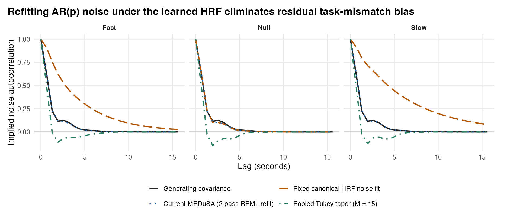

| Canonical HRF (1-pass) | Current MEDuSA (2-pass) | Oracle true HRF | Tukey 10 (canonical) | Tukey 15 (canonical) | Tukey 15 (selected HRF) | Tukey 28 (selected HRF) | |
|---|---|---|---|---|---|---|---|
| Fast HRF parcel | 0.260 | 0.006 | 0.006 | 0.070 | 0.105 | 0.090 | 0.096 |
| Slow HRF parcel | 0.314 | 0.008 | 0.008 | 0.052 | 0.084 | 0.097 | 0.107 |
| Null parcel | 0.011 | 0.011 | 0.011 | 0.093 | 0.100 | 0.100 | 0.109 |
What Woolrich’s noise study contributes
Executive summary: Woolrich, Ripley, Brady, and Smith (2001), Temporal Autocorrelation in Univariate Linear Modeling of FMRI Data (NeuroImage 14, 1370–1386, DOI 10.1006/nimg.2001.0931), highlights three principles that directly shape Step 1 of medusa: (1) separating task mean-model mismatch from residual autocorrelation, (2) regularizing temporal covariance across neighboring voxels without pooling signed BOLD responses, and (3) estimating noise correlation and marginal noise scale coherently so propagated readout covariance \(B\Sigma B^\top\) is well calibrated. At the same time, our live diagnostic benchmarks show why replacing MEDuSA’s REML AR(\(p\)) cascade with a raw-residual Tukey lag taper is not advantageous under high-rank event-related mean models.
What Woolrich et al. (2001) actually demonstrate
Woolrich et al. (2001) compare temporal autocorrelation estimators for univariate task-activation GLMs. Their FILM procedure estimates residual autocorrelation, stabilizes long-lag estimates with a Tukey cosine lag taper:
\[ \widehat r_T(\ell)= \begin{cases} \tfrac12\{1+\cos(\pi\ell/M)\}\widehat r(\ell),&0\le\ell<M,\\ 0,&\ell\ge M, \end{cases} \]
borrows information locally within tissue types (SUSAN), and prewhitens both data and design. Two nuances matter when translating their findings to modern fast-TR event-related deconvolution:
- Bandwidth scales with TR, not volume count: Fifteen lags spans 45 s at \(\text{TR} = 3\text{ s}\) (Woolrich’s primary acquisition) but only 9.75 s at \(\text{TR} = 0.65\text{ s}\).
- Projection distortion grows with design rank: After projecting out an \(m\)-column event/nuisance design \(X\) (\(M_X = I - P_X\)), raw OLS residuals have covariance \(\operatorname{Cov}(r) = M_X \Sigma M_X^\top \neq \Sigma\). In rapid trial-wise designs where \(X\) carries dozens of free event columns, raw-residual sample autocorrelations acquire substantial negative projection bias that simple lag tapering does not undo.
How medusa implements—and extends—these principles
| Principle | Implementation in medusa::fit_crossrun_decon() |
Methodological role |
|---|---|---|
| Separate HRF shape mismatch from noise autocorrelation | Two-pass target-excluding REML noise refit: Pass 1 estimates initial noise under a canonical fallback HRF + free event amplitudes + temporal derivatives; once cross-run HRFs are selected out-of-sample, Pass 2 refits each run’s AR(\(p\)) noise model using the selected HRF while keeping HRF selection strictly frozen | Prevents unmodeled fast/slow vascular dispersion from spilling into residuals and pushing \(\widehat\rho\) to the upper boundary (0.90). |
| Regularize temporal covariance without projection bias | Pooled AR(1) profile REML on the exact residual subspace \(M_X\) + shrunk residual AR(\(q\)) Yule–Walker correction with projection-bias adjustment | Achieves low-variance spectral regularization while accounting analytically for degrees-of-freedom and projection loss from \(M_X\). |
| Borrow spatially without cancelling opposing task signals | Averages REML log-likelihood profiles across voxels within each spatial_groups parcel rather than averaging raw BOLD time series |
Voxels with positive, negative, or null task responses contribute coherently to shared physiological noise estimation. |
| Estimate correlation and marginal scale coherently | hrf_estimate_gls_noise_sd() computes leverage-standardized, Winsorized GLS residual scale under the post-selection HRF and AR(\(p\)) cascade, converting innovation SD to stationary marginal noise_sd |
Eliminates mismatch between temporal whitening correlation \(\Sigma_{\rm cor}\) and marginal amplitude \(\sigma_{\rm obs}\) in propagated covariance \(\Omega = \sigma_{\rm obs}^2 B \Sigma_{\rm cor} B^\top\). |
Live benchmark 1: Separating HRF mismatch from temporal autocorrelation
Using the Step 1 simulation (3 runs, \(\text{TR} = 0.65\text{ s}\), 360 volumes, 24 jittered events/run, 8 voxels each in Fast, Slow, and Null parcels, true noise parameters \(\rho = 0.65, \psi_1 = 0.20, \psi_2 = -0.30\)), we compare:
Canonical_HRF: Single-pass AR(\(p\)) noise estimation locked to a fixed canonical HRF (no post-selection refit).Current_MEDuSA: Livefit_crossrun_decon()with its 2-pass post-selection REML AR(\(p\)) refit (using the out-of-sample cross-run selected HRF, zero target-run leakage).Oracle_true_HRF: Noise fit conditioned on the exact data-generating HRF.Tukey10/15/28comparators: Pooled raw-residual Tukey lag tapers (\(M \in \{10, 15, 28\}\)) under either canonical or selected-HRF mean models.
The table below reports lag-1-through-24 implied noise autocorrelation RMSE averaged across the three runs (lower is better):

Two results stand out clearly:
- Post-selection noise refitting eliminates HRF-induced autocorrelation inflation: Under a misspecified
Canonical_HRF, unmodeled vascular shape residuals drive \(\widehat\rho\) to its upper bound in both active parcels (acf_RMSE_1_24 = 0.260inFast,0.314inSlow).Current_MEDuSA’s target-excluding 2-pass refit drops ACF RMSE to0.006(Fast) and0.008(Slow)—matchingOracle_true_HRF(0.006and0.008) without touching target-run HRF selection! - REML subspace likelihood outperforms raw-residual lag tapering: Even when given the selected HRF (
Tukey15_selected), raw-residual Tukey tapering retains0.090–0.100ACF RMSE—even on the pureNullparcel (0.100vs.0.011forCurrent_MEDuSA)—because projecting 24 free trial predictors + drift terms out of 360 volumes distorts sample residual autocorrelations (\(\operatorname{Cov}(r) = M_X \Sigma M_X^\top\)).
Live benchmark 2: Coherent marginal scale and propagated readout covariance
What ultimately matters for Step 3–6 inference is not the ACF plot in isolation, but the accuracy of the propagated trial readout covariance \(\Omega = \sigma_{\rm obs}^2 B \Sigma_{\rm cor} B^\top\). Evaluating a frozen linear inverse (\(\lambda = 0.01\), second-difference penalty) at event onsets, we compare Canonical_HRF vs. Current_MEDuSA under both the standalone second-difference scale (d2, estimate_decon_noise_sd()) and MEDuSA’s covariance-consistent GLS residual scale (gls, hrf_estimate_gls_noise_sd()). Ideal SD/SE ratios equal 1.000, and ideal full-covariance relative Frobenius error equals 0.000:
| Parcel | Noise correlation | GLS SD / true | d2 SD / true | SE / true (known SD) | SE / true (GLS SD) | Full Cov Frobenius Err (GLS) |
|---|---|---|---|---|---|---|
| Fast | Canonical HRF (1-pass) | 2.276 | 2.525 | 0.504 | 1.145 | 0.276 |
| Fast | Current MEDuSA (2-pass) | 1.028 | 1.203 | 0.979 | 1.010 | 0.043 |
| Slow | Canonical HRF (1-pass) | 2.047 | 2.071 | 0.541 | 1.111 | 0.207 |
| Slow | Current MEDuSA (2-pass) | 1.047 | 1.073 | 0.980 | 1.030 | 0.075 |
| Null | Canonical HRF (1-pass) | 1.013 | 1.025 | 1.009 | 1.023 | 0.061 |
| Null | Current MEDuSA (2-pass) | 1.013 | 1.025 | 1.009 | 1.023 | 0.061 |
Notice how Canonical_HRF suffers from compensating errors that mask off-diagonal miscalibration: its overly persistent correlation matrix alone underestimates readout SEs by roughly half (SE / true (known SD) = 0.48–0.56), while unmodeled HRF residuals inflate its marginal SD by more than \(2\times\) (GLS SD / true = 2.04–2.28), leaving diagonal SEs near 1.10–1.14 even though the full trial-by-trial covariance matrix has 21–28% Frobenius error! By contrast, Current_MEDuSA (2-pass REML correlation + Winsorized GLS marginal noise_sd) recovers both marginal scale (GLS SD / true = 1.01–1.05) and correlation shape (SE / true (known SD) = 0.98–1.01), cutting full readout covariance Frobenius error down to 4.3–7.5% across all three parcels.
Remaining frontiers and practical takeaways
- Keep HRF groups tissue-homogeneous: In
fit_crossrun_decon(),spatial_groupscurrently defines both HRF evidence pooling and AR(\(p\)) noise pooling. Avoid lumping high-pulsatility CSF/vascular-rim voxels into cortical gray-matter parcels; local tissue-aware noise neighborhoods (Parlak et al., 2023; Olszowy et al., 2019) remain a natural future refinement. - Match
ar_orderto acquisition TR: Defaultar_order = "auto"(up to cascaded AR(3)) works well for standard and moderate multiband TRs (\(0.65\text{–}2.0\text{ s}\)); ultra-fast TRs (\(< 0.5\text{ s}\)) with unmodeled cardiac/respiratory aliases should pair physiological regressors (nuisance_list) with residual ACF inspection. - Remember what temporal prewhitening does not identify: Temporal whitening within each parcel calibrates \(\Omega_{rr}\), not cross-parcel shared noise \(\Omega_{st}\)—which is why
fit_crossrun_decon()also retains task-freenoise_innovationsso Step 4 and Step 6 (shared_error = "auto") can estimate spatial noise covariance directly.
Reproducibility
Run directly from medusa_step1_hrf_noise/woolrich_review/ (after running ../simulate_step1.R):
Rscript compare_noise.R
Rscript variance_check.R
Rscript plot_comparison.R- Scripts: compare_noise.R · variance_check.R · plot_comparison.R
- Saved outputs: diagnostic_comparison.csv · diagnostic_acfs.csv · diagnostic_summary.csv · variance_check.csv · comparison_session.txt